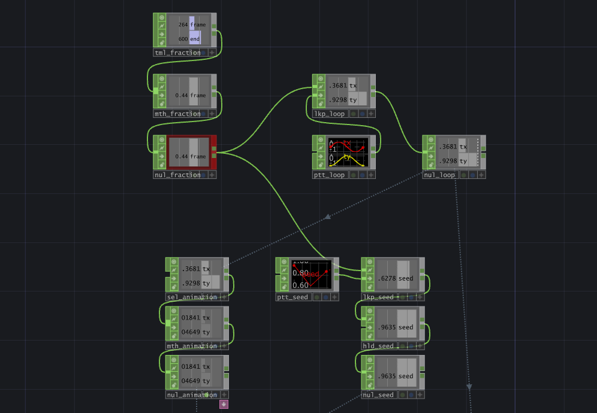
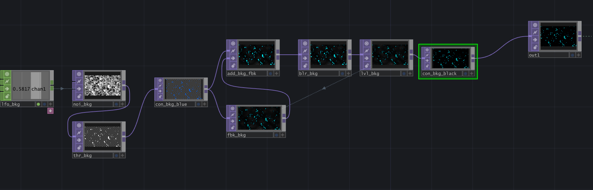
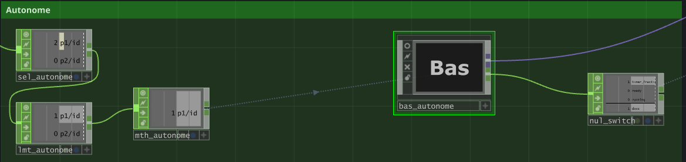

Dans le cadre de mon cours de Médias interactifs, à ma 6e session, notre travail final était de programmer une projection murale interactive qui bascule vers un second écran lorsque personne n’est présent.


Projet solo : conception, direction visuelle, programmation nodale et page web de présentation.
Conception, design et programmation : Yoan Robitaille
Idée originale : Ariane Lachance
L’intelligence artificielle a été utilisée en partie pour m’assister dans la programmation (TouchDesigner) ainsi que dans certains aspects du design de la page web de présentation.
Pour ce projet, je me suis inspiré de vidéos de danse trouvées sur les réseaux sociaux, mettant en scène des personnes habillées en glow stick dans le noir.


J’ai passé beaucoup de temps à trouver la meilleure façon de représenter chaque partie du corps en néon, en m’assurant que le rendu reste cohérent une fois animé.
En m’inspirant d’un tutoriel YouTube de Simon Alexander-Adams, j’ai programmé un mode autonome qui s’active lorsque personne n’est détecté devant l’écran : un art abstrait génératif à l’aide de cubes en mouvement.



J’ai senti qu’il manquait quelque chose au projet, alors j’ai ajouté des sabres laser aux deux personnages, avec des effets sonores liés à leurs mouvements.

.png)

J’ai terminé en réglant les différents bugs rencontrés, notament le changement entre la page autonome et le personnage
